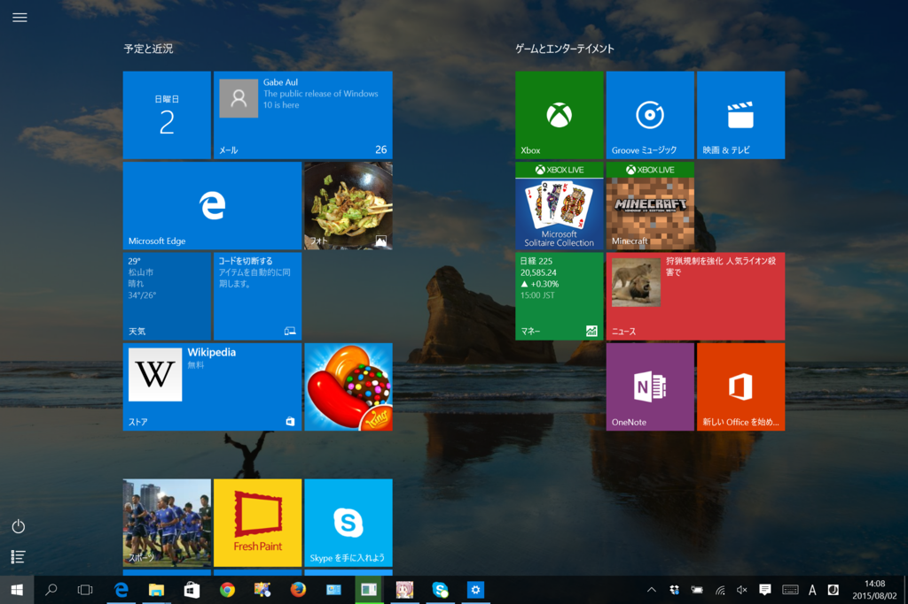

ものぐさな俺さまが Windows 10 をインストールした後にやった 3 つのこと
公開日：
自分は基本的にデフォルトの設定で使う派なのだけど、Surface 3 LTE を Windows 10 にしたあとでちょっとだけイジった。
タスクバーを広げる

検索ボックスは要らないのでボタンにしておく（いっそのこと、表示しないでもよいだろう）。これでタスクバーがだいぶ広くなる。

なぜこっちがデフォルトの設定じゃないのだろう。おそらく検索機能をアピールしたかったんだろうけど、アプリを5，6個立ち上げただけでタスクバーがオーバーフローして二段表示になるのはかなり使いづらいと思う。
ちなみに、この状態でも［Windows］＋［S］キーを押せば検索機能にアクセスできる。［Windows］キーを押してスタートを表示させた状態でキーワードをタイプしてもよい（自分は後者を多用しており、マウスはあまり使わないほどだ）。
スタートを全画面にする

巷ではチマチマしたスタート“メニュー”が好まれているようだが、全画面表示されるスタート“画面”の方が一度にたくさんタイルが表示できていいじゃないか？ なぜわざわざ縦スクロールをせにゃならん？ こっちがデフォルトでいいぐらいだ。
まぁ、百歩譲ってマウスで動作するときはコンパクトなメニュータイプの方がいいっていうのは認める。
でも、そういう人たちにとって Windows 10 のスタート“メニュー”はきっと「コレジャナイ」。メニューの階層構造が分かりやすく、表示がコンパクトでマウス移動量の少なくて済む“クラシックな”メニューがほしかったのではないだろうか。そういう人たち向けのオンラインソフトもあるので、適当にググって入れればいいと思う。
俺からしたら、毎度ちまちまサブメニューをたどるのなんかやってられんが……よく使うアプリはピン留めしときゃいいし、まれにしか使わないモノは検索した方が早い。

ともかく、タッチパネルのある Surface 3 ならばスタート“画面”の方がおススメだと思う。
不要なファイルを消す
管理者権限で「ディスク クリーンアップ」を起動し、不要なファイルを一掃する（ロールバックできなくなるから、一通り動作を試した後にやるのがいい）。これでも消えないファイルもあるっぽいけど（うちは Windows.old にドライバーの類が残っていた）、まぁ、自分はあんまり気にしないかな。そういうのを気にする人は、アップグレードしたあとにクリーンインストールするといいらしいが自分は面倒くさいのでしない。
そのほかにもいろいろある気はするけど（プライバシー設定なんかは気になる人は気になるだろうと思う）、自分は設定をいじるのが面倒くさいタイプなので、とりあえずこれで使い続けるつもり。
おまけ
Windows 10 で自分が唯一残念に思っているのは、OneDrive がプレースホルダースタイルからフォルダーの選択同期スタイルになってしまったこと。確かに動作は分かりにくいし、たまに動作が怪しかったけれど、あれはかなり先進的な機能だった。人類には早すぎたといえばそれまでだけど、返す返すも惜しまれる。